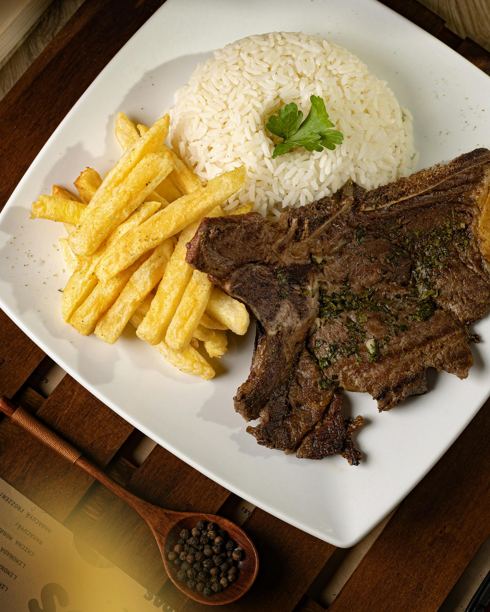
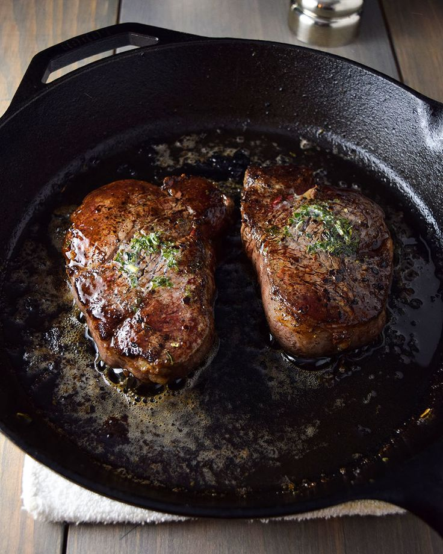
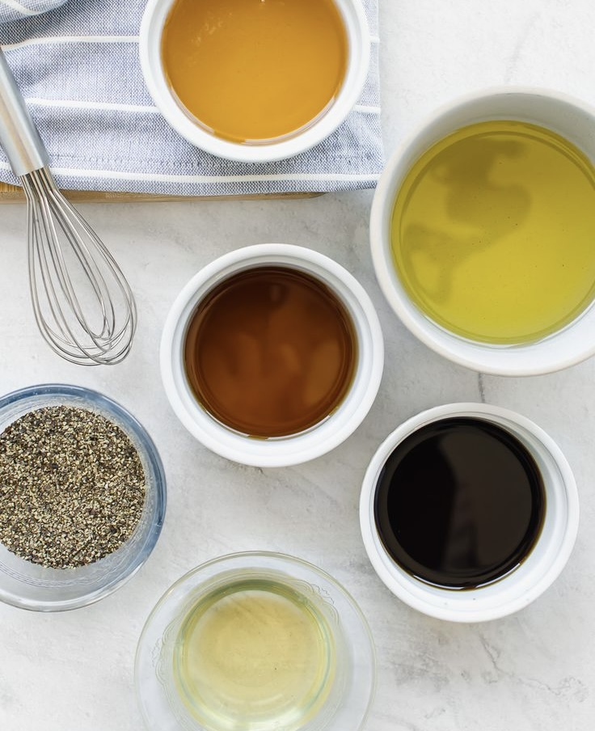
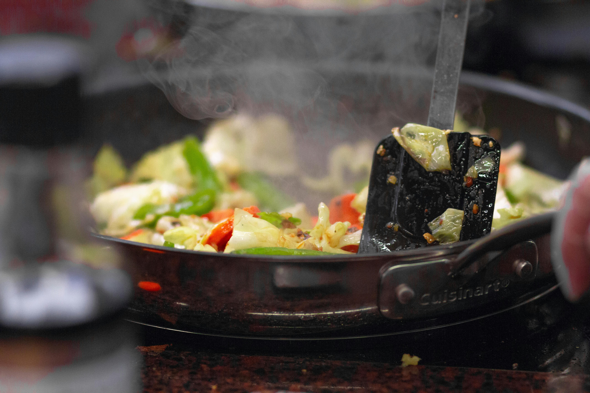
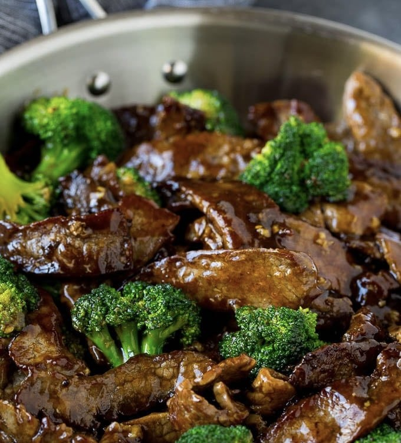

Beef stir-fry
Ingridients
- 1 pound flank steak, thinly sliced
- 1 tablespoon cornstarch
- 2 tablespoons vegetable oil
- 1 cup broccoli florets
- 1 red bell pepper, sliced
- 2 carrots, thinly sliced
- 1/2 cup snow peas
- 1/4 cup soy sauce
- 1 tablespoon brown sugar
- 1 teaspoon minced ginger
- 1 clove garlic, minced
- 1 teaspoon sesame oil
- Cooked rice, for serving .
Nutrition
- calories
- 450
- fiber
- 10g
- protein
- 30g
- fat
- 20g
- carbohydrates
- 35g
How to Make It:
step 1
Toss the beef with cornstarch in a bowl

step 2
Heat oil in a large skillet or wok over high heat. Add the beef and cook until browned, about 3-4 minutes. Remove from the pan and set aside.
step 3
Add the broccoli, bell pepper, carrots, and snow peas to the pan and stir-fry for 3-4 minutes, or until tender-crisp.


step 4
In a small bowl, whisk together the soy sauce, brown sugar, ginger, garlic, and sesame oil.
step 5
Pour the sauce into the pan with the vegetables and bring to a simmer.


step 6
Add the cooked beef back to the pan and stir to coat serve over cooked rice.